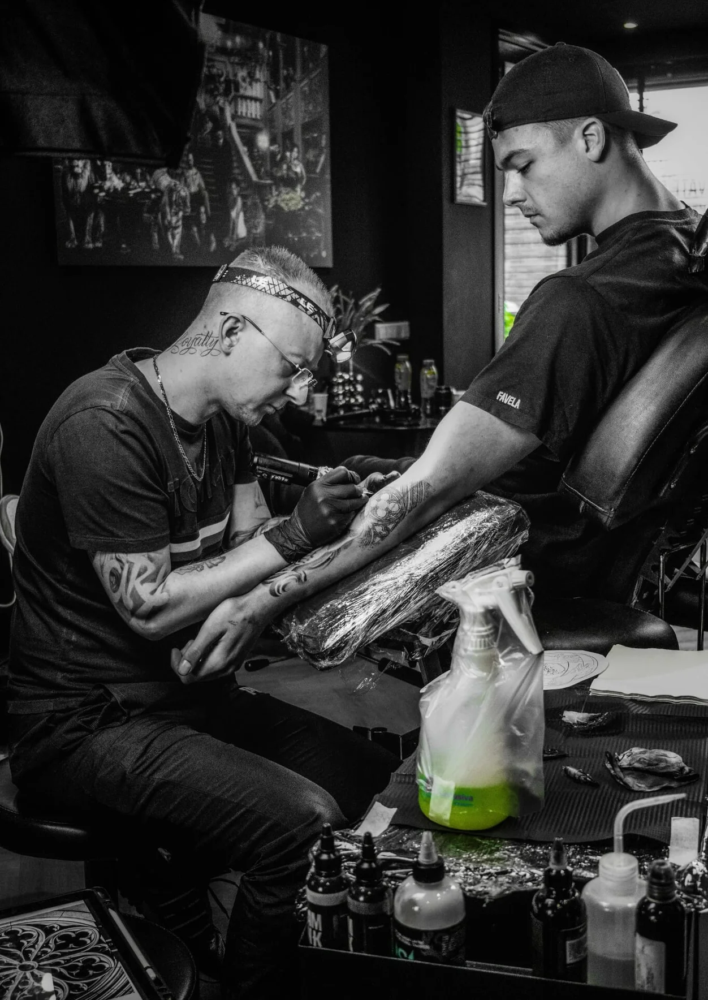

Black & Grey Realism
Justin
Benjamin
Eigenaar van Bandit Ink sinds december 2023. Justin is gespecialiseerd in Black & Grey realism — met bijzondere aandacht voor diepte, contrast en de details die een stuk tot leven brengen.
Van portretten tot composities op maat: elk stuk wordt uitgewerkt als een uniek origineel.
↗ @justinbenjamintattoo